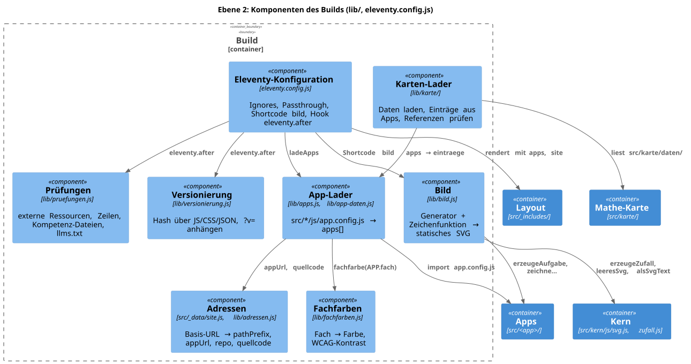
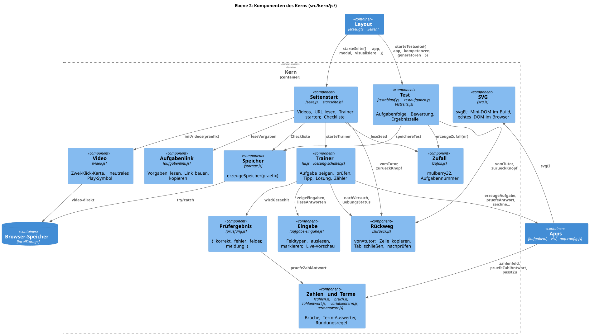

Bausteinsicht: Fachliches je App-Ordner, Generisches einmal im Kern, Layout und Build
Die Bausteine folgen einer Linie: Was je App anders ist, steht in src/<app>/. Was alle Apps teilen,
steht einmal im Kern (src/kern/), im Layout (src/_includes/, src/*.njk) und im Build (lib/).
Die Abhängigkeit zeigt vom Fachlichen zum Kern, nie umgekehrt: Der Kern importiert keine
App-Konfiguration; die Seite reicht APP, KOMPETENZEN und Generatoren hinein
(ADR-013). Der Build liest die App-Konfigurationen und
erzeugt daraus alles, was eine App sonst von Hand pflegen müsste.
Ebene 1: Whitebox Lern-Apps
Die externen Nachbarn sind dieselben sieben Systeme und zwei Personen wie im fachlichen Kontext.
Der Skill lern-app liegt im Monorepo unter werkzeuge/skill/lern-app/ (PR #7). Er ist Werkzeug der
Autor:in, kein Baustein der Site: Er wird weder gebaut noch ausgeliefert, sondern nach
~/.claude/skills/ verlinkt. Eine eigene Vorlage gibt es nicht mehr; eine neue App entsteht als Ordner
src/<app>/.
| Baustein | Verantwortung | Schnittstelle | Quellort |
|---|---|---|---|
Lädt jede App aus ihrer Konfiguration und ergänzt Adressen, Fachfarbe und Kompetenznummern; zeichnet statische Bilder; bindet die Karte ein; prüft Regeln und bricht bei Verstößen ab; hängt |
|
|
|
Erzeugt Kopf, Menü mit Nummern-Plaketten, Footer mit Site-Version, Fachfarbe, das Gerüst jeder Kompetenzseite (Warum, Regel, Beispiel, Bild, Video, optional serlo-Link, Übung) sowie Start-, Test- und Manifest-Seite jeder App per Pagination; dazu Übersicht und |
Front Matter der Kompetenzseiten; Anker |
|
|
Alles Generische im Browser: Aufgabennummer, Zahlen und Terme lesen und prüfen, Eingabefelder, Übungsrahmen, Test, Videos, Speicher, Mini-DOM für SVG. Einmal unter |
|
|
|
Das Fachliche je Thema: Konfiguration, eine Markdown-Seite je Kompetenz, Generator mit Prüfer, Zeichenfunktion, Tests, Texte für den Tutor, Icons. Heute |
|
|
|
Mathe-Kompetenzen der Sekundarstufe I nach KMK-Leitideen und Lehrplänen (16 Länder, Gymnasium) als statische Seiten, |
URL-Parameter |
|
|
Diese arc42-Dokumentation mit ADRs; eigenes Theme-Overlay ohne CDN-Ressourcen. |
|
|
|
Unit-Tests für Kern, Build und Karte; Generator-Vertrag für jede Kompetenz jeder App; Test und Build bei jedem Push und PR; Deployment von Site und Doku. |
|
|
|
Merkt Selbsteinschätzung, letzten Test und Video-Merker, nur im Browser des Kindes. |
Schlüssel |
|
Ebene 2: Whitebox Build

| Komponente | Verantwortung | Quelle |
|---|---|---|
Eleventy-Konfiguration |
Verdrahtet alles: |
|
Adressen |
Die einzige Basis-URL und alles daraus Abgeleitete (ADR-015). |
|
App-Lader |
Jeder Ordner mit |
|
Fachfarben |
Tabelle der fünf Fächer; unbekanntes Fach bricht den Build (ADR-011). |
|
Bild |
Führt Generator und Zeichenfunktion in Node aus und schreibt das SVG in die Seite (ADR-016). |
|
Karten-Lader |
Lädt Leitideen, Kompetenzen, Lehrpläne, Zuordnungen; baut Einträge aus Apps; prüft Knoten (ADR-018). |
|
Prüfungen |
Regeln als reine Funktionen; jeder Fund bricht den Build (ADR-008, ADR-017). |
|
Versionierung |
Ein Hash über alle ausgelieferten JS/CSS/JSON; |
|
Ebene 2: Whitebox Kern

| Komponente | Verantwortung | Schnittstelle (Auswahl) | Quelle |
|---|---|---|---|
Seitenstart |
Bereitet Videos vor, liest |
|
|
Trainer |
Übungsoberfläche: Aufgabe, Prüfen, Tipp, Lösung zeigen/verbergen, Neue Aufgabe, Zähler. Hinweise neutral, nicht als Versuch gezählt. |
|
|
Eingabe |
Feldtypen |
|
|
Zahlen und Terme |
Deutsche Zahlen, exakte Brüche, Term-Auswerter ohne |
|
|
Prüfergebnis |
Einheitliches Ergebnis aller Prüfer; entscheidet, was zählt. |
|
|
Zufall |
Deterministischer Zufall aus der Aufgabennummer; zufällige Nummer 1–9999. |
|
|
Aufgabenlink |
Zeile „Aufgabe Nr. N · Link · Link kopieren“; Vorgaben validieren; kopieren mit Rückfall. |
|
|
Test |
Test und Schnelltest aus der Testnummer; Bild im Test über den Aufgaben-Vertrag; Ergebniszeile. |
|
|
Rückweg |
Nur mit |
|
|
Video |
Zwei-Klick-Karte mit neutralem Play-Symbol; iframe erst nach Klick; Merker je App. |
|
|
Speicher |
Einziger Zugang zu Selbsteinschätzung und letztem Test, mit App-Präfix; |
|
|
SVG |
Erzeugt SVG-Elemente; im Build ein Mini-DOM, im Browser |
|
|
Feedback
Was this page helpful?
Glad to hear it! Please tell us how we can improve.
Sorry to hear that. Please tell us how we can improve.